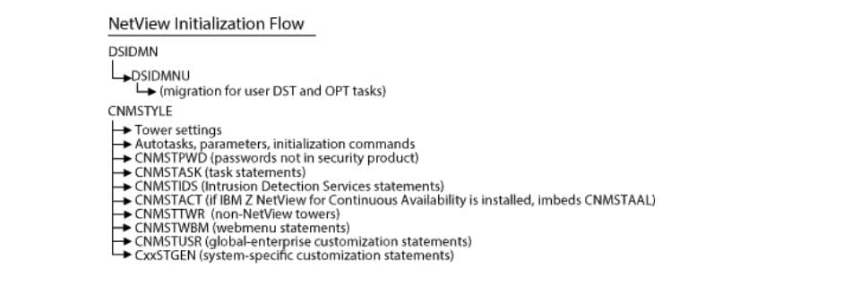

Figure1.NetViewV1R4InitializationFlow

Figure2.NetViewV6R3InitializationFlow
Note:Review CNMSTNXT to see statement changes made to CNMSTYLE members for NetView V6R3 program.
When you finish with this chapter,continue with Chapter7,“Getting Ready to Start NetView,”on page87.
For changes by release, including changed panels, commands, messages, and samples, see the following appendixes:
• AppendixA, “Changes from Tivoli NetView for z/OSV6R1 to Tivoli NetView for z/OSV6R2, ”onpage113
• AppendixB, “Changes from Tivoli NetView for z/OSV6R2 to Tivoli NetView for z/OSV6R2M1,” onpage129
• AppendixC, “Changes from Tivoli NetView for z/OSV6R2M1 to IBMZ NetView V6R3,”onpage147
Migrating to the Graphical Enter prise NetView program does not requirey out or unany of the graphical functions. However,there might be some additional installation steps that are required to activate the Graphical Enterprise option of NetView. You can skip certain installation steps that are marked as only applying to a graphical function that you do not want to activate. However, keep in mind that if at some point you decide to activate a graphical function, these installation steps need to be revisited to ensure that all of then ecessary setup is complete.
Table13 on page25 lists functions that we reavailable with the V1R4 Graphical Enterprise option that are now available to you with the NetView V6R3 program.
RODM is available at the Unattended and Procedural levels of the NetView program but is mostly utilized by the graphical function savailable with the Graphical Enterprise option and there for emight no thave not been activated with your Unattended or Procedural NetView program.
Table14.ListofNewSamples(continued)
Table14.ListofNewSamples(continued)
Table14.ListofNewSamples(continued)
Table14.ListofNewSamples(continued)
Table14.ListofNewSamples(continued)
2.For NetView data setsen sure yourhigh- level qualifier for user-defined data sets spoints to NETVIEW.V6R3USER.
5.The default regionsize was increased to 256M. If you are using the existing default regionsize (98304K) for the NetView product, increase the regionsize value:
12.If you plantouse the Web Services Gate way function, uncomment the XM Llibrary DD statement.
19.Add the following datasets to collect distributed DVIPA statistics:
• Messageadapter
• Confirmedmessageadapter
• Alertadapter
• Confirmedalertadapter
• Alert-to-trapadapter
Table16 on page38 lists the towers and sub towers that were deleted.
The CNMSTYLE member replaces some of the definition statements in members of the DSIPARM dataset and all the initialization performed by the CNME1034 command list.
The CNMSTYLE member contains descriptive comments about the types of statements that are included. Read the comments and review the defaults.
Because the NetView 3270 management console was removed, the TASK. DSITCPIP. INIT statement was deleted.
Thefollowingdefaultschanged:
Make sure the PPT has authority to write the converted command authorization table to the DSIPARM dataset.
2.The SSI name statement is no longer used; if specified, it is ignored.
The name of the sub system router task is CNMCSSIR. Starting with NetView V6R1, changing the task name of the sub system router has no utility and is not supported.
For information about new, changed, or deleted CNMSTYLE statements, see “CNMSTNXT” on page42.
CNMSTACT
The CNMSTACT member includes the CNMSTAAL member if the IBM Z NetView for Continuous Availability product is installed. The CNMSTACT member is used for the GDPS Continuous Availability solution.
CNMSTIDS
The CNMSTIDS include member contains Intrusion Detection Services statements. The z/ OS Communications Server Version1 Release13 and Version2 Release1 Intrusion Detection Services probes are added.
CNMSTNXT
The CNMSTNXT member contains statements that are new, changed, ordeleted. Statements are grouped according to version and release level of the NetView product. Review the statements in the CNMSTNXT member and update the CNMSTUSR or CxxSTGEN member as necessary.
Ifyouwantinformationabout... Referto...
Note:Data REXX statements in DSICMDU have already been processed and the refore do not exist in the DSICMDU KEEP.
Command definitions in the DSICMDU member that duplicate command definitions found in the CNMCMSYS or CNMCMENT member are over ridden by the latter. Command definitions in the DSICMDU member that duplicate commands in the NetView internal command set are considered tobein error.
To migrate your definitions from the DSICMDU member, complete the following steps:
1. Start NetView inatest environment and note any DSI234I messages for duplicate command definitions.
2. Retrieve the migrated DSICMDU command definitions from the NetView KEEP and store them in CNMCMDU, for example:
DSIDMN
The parameters set in the DSIDMN member were migrated to the CNMSTYLE member. If you do not remove existing statements, they are ignored during DSIDMN processing.
User-defined TASK statements are still supported.You can also add these statements to the CNMSTYLE member. For information about the CNMSTYLE TASK statements, see IBM Z NetView Administration Reference.
EXCMDSEC is no longer supported. Review your keyword and value authorizations for the EXCMD command to make sure that you maintain your preferred security. For more information, refer to IBMZ NetView Security Reference.
Note: Statements that were in the DSIDMNK member are now in the CNMSTYLE member. The DSIDMNK member was removed.
DSIIFR
As of NetView V6R1, the IFRAUWWI field is removed from the DSIIFR macro.To retrieve or test the WTOID, use the IFRAUWID field instead. The IFRNLYESf lag no longer has any use. Remove references to this bit.
DSIILGCF
The DSIILGCF member in the DSIPARM dataset defines the initialization values for the IP log.It includes logic to extract initialization values from the CNMSTYLE member. Update IPLOG statements in the CNMSTUSR or CxxSTGEN membert or eflect the values previously specified in the DSIILGCF member.
DSILUCTD
The DSILUCTD member in the DSIPARM data set contains initialization statements for the CNM data transfer task. It includes logic to extract initialization values from the CNMSTYL member. Update LUC statements in the CNMSTUSR or CxxSTGEN member to reflect the values specifiedin DSILUCTD on the system from which you are migrating.
DSIOPF
Starting with V6R2,the DSIOPF member has a new structure:
If you modified the V1R4DSIOPF member and you want to use the new structure, copy any changes that you made in to theap propriate V6R3 member.
%INCLUDE Members Usage notes:
1. Data REXX logic was added to conditionally defineoperat or definitions based on the level of the NetView program installed, the towers that are enabled by the CNMSTYLE member, or both.
2. You can add Data REXX logic to conditionally define operator definitions in DSIOPFU. Data REXX filesmust have either /*%DATA*/ or /*%LOGIC*/ as the first statement. Comments can follow on thesame or subsequent lines. A blank in the first column indicates a continuation of the previous statement. For more information about Data REXX, refer to IBM Z NetView Installation: Configuring Additional Components.
3. TheFKXOPFIP member is used when the IPMGT tower is enabled. This member is not used if the AON component is enabled. Because of this, operator definitions duplicate those in the EZLOPF and FKXOPF members.
Added Operators
The following operator definitions were added:
Deleted Operators
The following operat or definitions were deleted:
DSIREXCF
The DSIREXCF member in the DSIPARM dataset defines the initialization values for the REXEC Server. It includes logic to extract initialization values from the CNMSTYLE member. Update REXEC statements in the CNMSTUSR or CxxSTGEN member to reflect the values previously specified in the DSIREXCF member. Do not modify the Data REXX version of the DSIREXCF member.
DSIRSHCF
The DSIRSHCF member in the DSIPARM data set defines the initialization values for the RSH Server. It includes logic to extract initialization values from the CNMSTYLE member. Update RSH statements in the CNMSTUSR or CxxSTGEN member to reflect the values previously specified in the DSIRSHCF member. Do not modify the Data REXX version of the DSIRSHCF member.
DSIRTTTD
The DSIRTTTD member of the DSIPARM data set contains initialization statements for the TCP/IP alert receiver. It includes logic to extract initialization values from the CNMSTYLE member. Update RTT statements in the CNMSTUSR or CxxSTGEN member to reflect the values that you previously specified in the DSIRTTTD member. Do not modify the Data REXX version of the DSIRTTTD member.
DSIRXPRM
The DSIRXPRM load module contains the REXX initialization parameters that are required to establish a new REXX environment.
Note: If you previously added any REXX initialization parameters to the DSIRXPRM module, delete the previous version of the DSIRXPRM module. As of NetView V6R2, the NetView program is not compatible with previous versions of the DSIRXPRM module.
Define the previously added REXX initialization parameters as follows:
• If you previously added REXX command environments or REXX function package names to the DSIXPRM module, migrate those changes to the CNMSTYLE (CNMSTUSR or CxxSTGEN) member by using the following CNMSTYLE statements. For more information about these statements, see the Administration Reference.
– REXX.CMDENV.name
– REXX.FUNCPKGLIST.LCL.name
– REXX.FUNCPKGLIST.SYS.name
– REXX.FUNCPKGLIST.USR.name
• If you previously added other REXX initialization parameters to the DSIRXPRM module, merge those changes in to the V6.3.0 version of the CNMSJM11 sample. Ensure that you deleted the earlier version
of the DSIRXPRM module, and then run the CNMSJM11 sample to as sembleand linkedit your changes in to the DSIRXPRM module.
Note: You must delete the earlier version of the DSIRXPRM module because it was linkedited with the RENT attribute where as the current version is linkedited with the REUS at tribute.
• If you previously added the system REXX function package for IBM Z System Automation to the DSIRXPRM module, drop the modified DSIRXPRM module from your environment. The System Automation INGRXFPGREXX function package is loaded automatically when the SA tower is enabled.If necessary, use the previous migration steps to include other System Automation REXX function packages.
DSISPN
The DSISPN member is now obsolete.
Use the SECMIGR migration tool to convert existing VTAMLST and DSISPN definitions in to entries in the NetView span table. The SECMIGR tool creates the span table, converts your existing span of control definitions into span table statements, and loads them into the span table. When you are ready to initialize the NetView program, load the NetView span table by specifying its name on the SECOPTS. SPANAUTH statement in the CNMSTUSR or CxxSTGEN member. For an example span table, refer to the CNMSPAN2 sample.
DSITBL01
The DSITBL01 automation table is the default NetView automation table and is required by the NetView program. The DSITBL01 automation table provides basic automation statements to respond to messages and management services units (MSUs). If the DSITBL01 automation table is not activated during NetView initialization, the DWO093W warning message is issued by the NetView program.
Some % INCLUDE statements and as sociated statements to start automation were replaced by entries in the CNMSTYLE member. If you modified the DSITBL01 member, merge your changes with the V6R3DSITBL01 member. After making changes, renumber the NetView automation table. When the NetView automation table processes a message and finds a match that results in a command or command listbeing run, it writes the CNM493I message to the NetView log file. The CNM493I message contains the line number of the automation table entry matched.
Several messages that are supplied with the NetView product are changed with the V6R3 program.These messages are listed in the appendixes. Review the list and make any necessary changes to your automation table.
You can add your own automation table by using the AUTOCMD statement in the CNMSTUSR or CxxSTGEN member. Place your automation table before the DSITBL01 automation table and code CONTINUE(YES) on any local customization to make sure that messages flow to the DSITBL01 automation table. For more information on the AUTOCMD statement, refer to the IBM Z NetView Administration Reference.
Message automation isused to update information when some discovery manager resources start and stop. Add the CNMSEPTL automation sample member for these events. The CNMSEPTL member is included when the DISCOVERY tower is enabled.
DSIZVLSR
The DSIZVLSR module defines the buffer pools to be used with the VSAM LSR and DSR performance options. Update the DSIZVLSR module by using the CNMSJM01 sample job. Use the DSIZVLSR module shipped with V6R3. If you previously updated the CNMSJM01 job, merge those changes in to the V6R3CNMSJM01 job and run it to as semble and linkedit your changes in to the DSIZVLSR module.
The following changes were made to the DSIZVLSR module:
• The default STRNO value was increased from 30 to 40.
• New buffers were added to the index and data buffer pools for the new VSAM clustersal located for the DSITCONT task to support the TCPCONN command.
• Removed TARA support (BNJDSE36).
DUIFPMEM
The DUIFPMEM member in the DSIPARM data set contains TCP/IP initialization statements for theCNMTAMEL task. It includes logic to extract initialization values from the CNMSTYLE member. Update TAMEL statements in the CNMSTUSR or CxxSTGEN member to reflect the values that you previously specified in the DUIFPMEM member. Do not modify the DATAREXX version of the DUIFPMEM member.
DUIIGHB
The DUIIGHB member in the DSIPARM dataset contains initialization statements for the DUIDGHB task. It includes logic to extract initialization values from the CNMSTYLE member. Update the GHB statements in the CNMSTUSR or CxxSTGEN member to reflect the values that you previously specified in the DUIIGHB member. Do not modify the Data REXX version of the DUIIGHB member.
FKXCFG01
The FKXCFG01 member in the DSIPARM dataset contains configuration information for the AON component.
TCP390 policy information was moved from the FKXCFG01 member to the CNMPOLCY member. Move any TCP390 statements in your V1R4FKXCFG01 member to the V6R3CNMPOLCY member. Review your other AON configuration members (for example the EZLCFG01 member and the FKVCFG01 member) andany additional members that you included to find other TCP390 statements. Move all the TCP390 statements to the CNMPOLCY member.
FLBSYSDA
The FLBSYSDA member in the DSIPARM dataset is the initialization member for the APPN accounting manager. This member was removed.
FLCSAINP
The FLCSAINP member is obsolete.
In V1R4, The FLCSAINP member was the sample initialization file for the Multi System Manager. You can modify and rename the FLCSAINP member to either FLCAINP or another unique name. In V6R3, the FLCAINP member is used to specify the GETTOPO statements that you want to run during Multi System Manager initialization. All other Multi System Manager initialization definitions were migrated to the CNMSTYLE member.
For V6R3, use your existing FLCAINP (or other uniquely named member) and make the following updates:
1. If you made changes to initialization definitions (other than GETTOPO statements), migrate the changes to the CNMSTUSR or CxxSTGEN member.
2. Delete the definitions (non-GETTOPO statements) that you migrated to the CNMSTYLE member.
3. Delete any GETTOPOATMxxx statements.
4. Delete any GETTOPOLNMxxx statements.
5. Delete any GETTOPONETFxxx statements.
6. Delete any GETTOPONWCPxxx statements.
7. Delete any START_DISCOVERY statements.
Refer to IBMZ NetView Installation: Configuring Graphical Components for additional information about the FLCAINP member.
EKGSI101
EKGSI10 1isused for allocating the RODM log and check point data bases. This sample isused by sample job CNMSJ004.
If you allocated RODM check point datasets for fewer than the maximum number of windows supported by RODM and the estimated number of objects that you expect to store in the RODMd at acache exceeds the previous maximum supported number (approximately524, 000objects), consider increasing the size of the RODM check point data bases.
EKGXRODM
EKGXRODM is the RODM start procedure. Make the following changes to EKGX RODM:
1. For NetView datasets, ensure your high-level qualifier for system datasets points to NETVIEW. V6R3M0.
2. For NetView data sets,ensure your high-level qualifier for user-defined data setspoints to NETVIEW. V6R3USER.
3. Add the following ROUTECDE parameter after the SUBSYM parameter:
The DOMAIN statement was commente dout in the default DUIGINIT member.The preferred approach is to use the DOMAIN symbolic variable in the GMFHS start procedure (CNMGMFHS). If the default valuesthat are provided in the DUIGINIT member that is supplied by the NetView product are acceptable for your environment, consider using the default DUIGINIT member.
Table22. STEP LIBDD statement (continued)
Updatedstatement

BROWSEFacility
A new DEFAULTS setting called LB HOURLY controls whether the hourly statistics messages CNM154I, CNM155I, and CNM156I are posted to the network log. In previous releases, these hourly statistics messages were posted to the net work log automatically, with out an option to prevent them from being posted. The default setting for LB HOURLY is NO, as set by the DEFAULTS. LBHOURLY statement in the CNMSTYLE member. To continue receiving these hourly statistics messages in the net work log, add a DEFAULTS. LBHOURLY statement to the CNMSTUSR or CxxSTGEN member and setits value to YES.
DataREXXinParameterFiles
Data REXX allows for REXX-style logictobe coded in NetView dataset members.For example,Data REXXallows conditional inclusion of files and the assignment of values to parameters based on settings in the CNMSTYLE member.
The NetView programuses Data REXX in the following parameter files:
• AAUPRMLP
• BNJMBDST
• CNMCMENT
• CNMNEWS
• CNMSCAT2
• CNMSTASK
• CNMSTTWR
• CxxSTGEN
• CNMSTUSR
• DSIAMLTD
• DSICMDU(DataREXXsupport)
• DSIDMN
• DSIILGCF
• DSILUCTD
• DSIOPF
• DSIREXCF
• DSIRSHCF
• DSIRTTTD
• DSITBL01
• DSITCPCF
• DSIUINIT
• DSIWBMEM
• DUIFPMEM
• DUIIGHB
• EZLCFG01
• EZLDSIAO
• FKVCFG01
• FKVISTAO
• FKVTABLE
• FLBAUT
• HELPMAP(CNMS1048)
IPManagement
Most of the IP management functions that are available under the AON TCP subtower have also beenmade available under either the base NetView program (for example, Ping and Tracerte) or the new IP Management (IPMGT) tower. This change no longer requires you to configure the AON component inorder to access these IP management functions. However, because the AON TCP subtower and the IPMGT tower are mutually exclusive, you must decide whether to use the IPMGT tower or the AON TCP sub tower in order touse these IP management functions. To help with this decision, review the following list of IP management functions that are not available under either the base NetView program or the IPMGT tower:
• IPservermanagement(forUNIXCommandServerandTSOCommandServer)
• Issue TSO and UNIX commands (for UNIX Command Server and TSO Command Server)
• SNMP VIEW
• NetView 6000 support
• CISCOWorksBluefunction
Additionally, the following functions have changed:
• ACTMON
• IPtracing
• IPMAN
• IPSTAT
• Ping
• Tracerte
MessageLogging
Starting with NetView for z /OSV6R1, a new logging facility named Can zlog is required to be present for successful automation of system messages. This facility is enabled by using a data space which is, by default, defined with 2GB of virtual storage, and is allocated to the Master Scheduler address space. For more information about defining this data space, see the Installation: Getting Started manual.
Warning: Proper planning for real and auxiliary storage must be performed before enabling the Can zlog data space,as system slow down and hangs can occur with in sufficient storage.
NetViewResourceManager
As a result of beingable to customize the NetView Resource Managerau to task, forwarding status from ahost at the V5R2 or later level to a manager host on a previous release works only if the NetView Resource Managerau to task is AUTONRM. However, you can continue to forward status from ahostat the V1R4 level to a manager at the V5R2 or later level. There is no restriction on the NetView Resource Managerau to task name in V5R2or later for the upward migration to work.
Security Enhancements
The following security enhancements have been made:
• Support for mixed-case passwords and password phrases
• User-defined command authorization table:
With NetView V6.2.1 APAR OA48179, a sample command authorization table named CNMSCATU is provided in the DSIPARM data set. This sample is included by DSIPARM member CNMSCAT2 and is intended for user command authorization table entries. When using CNMSCATU, review and make any necessary modifications to CNMSCAT2, while considering the following rules:
– If you have more than one PROTECT statement that describes the same command, keyword and value, the first statement is used and all others are ignored.
– More than one PERMIT statement can be specified for the same comman did entifier.
– As of NetView V6.3, a sample IBMZ System Automation command authorization table named INGCAT1 is included if the SA. SYSOPS tower and sub tower are enabled.
For more information, see IBMZ NetView Security Reference.
Mixed Case Passwords
If youu sean SAF product for password checking, you mightbeable touse the mixed case password function. For more information, see IBMZ NetView Security Reference.
PasswordPhrases
The NetView program provides support for password phrase authorization. A password phrase can beused as a substitute for a password for all NetView functions that usean SAF product, such as RACF,for security checking. Any panel that accepts passwords was updated to accept password phrases. The password phrase can include phrases from 9-100 characters in length.
The RACF product allows password phrases to contain any valid EBCDIC characters. When setting apassword phrase for a user ID that will be accessed from a non-z/OS system, the password on that system is enteredas ASCII text. Not all EBCDIC characters havean ASCII equivalent, so limit the EBCDIC password phrase to characters that havean ASCII equivalent.
Password phrases are not supported in the following environments:
• Password checking using the DSIOPF member
• Log on validation using the DSIEX12 installation exit
• Tivoli Enterprise Portal login. Because of this restriction, the password phrase cannot be passed to the Tivoli Enterprise Monitoring Server for RACF verification.
• Functions that use the NetView-NetView task (NNT)
System Symbols in Parameter Files
The NetView programuses the MVS system symbolslisted in Table24 on page58. The system symbols are defined in the SYS1. PARMLIB dataset for the following members of the DSIPARM dataset:
• CNMSTYLE
• DUIGINIT
• FLBSYSD
& DOMAIN is a Net View symbol that isused in the following parameter files and is defined only with in the NetView address space:
• CNMSCBET
• CNMSMRT1
• CNMSTASK
• CNMSTGEN
• CNMSTPWD
• CNMSTUSR
• CNMSTYLE
• DSIAMIAT
• DSIAMII
• DSITBL01
• DSIVPARM
• FKXWHTML
• FLBSYSD
Attribute Data for Unsolicited MVS Messages
Starting with V6R1, the NetView program receives unsolicited MVS messages only through the sub system interface. Some data that was available by usinga value of SYSTEMf or MSGIFAC is no longer available.
Some message facilities (see Table25 on page59) depend on vectors in the Message Data Block (MDB). The MDB is not available for unsolicited MVS messages in NetView V6R1 or later. For this reason, the data facilities that are shown in Table25 on page59 return no value when used for unsolicited messages.
UNIX System Services
The following section describes the directories, configuration files, and functions that have changed from NetView V1R4 to NetView V6R3. Also review the section in “Preparing UNIX System Services” on page14.
The Net View MIB collection was moved fromthe/usr/lpp/net view/mibs /directory to the /usr/lpp/netview/v6r3/mibs/directory.
The following configuration files found in NetView V1R4 are no longer used in NetView V6R3:
• /etc/netview/fkxcm¹
• /etc/netview/ipdiscovery.conf
• /etc/netview/nv390mibs.def
• /etc/netview/nv390srvc.conf
• /etc/netview/snmp.conf
• /var/netview/properties/JdnServerProperties.txt
• /var/netview/properties/startup/config.properties
• /var/netview/properties/startup/node.def
• /var/netview/properties/startup/pollobj.def
• /var/netview/properties/startup/resource.def
• /var/netview/properties/startup/template.def
• /var/netview/properties/startup/view.def
Usagenote:
1. Copy any non- duplicate community names from fkxcm in to DSIPARM member CNMSCM.
The webre sources files that are used by the Web Services Gateway function are located in the following directory: